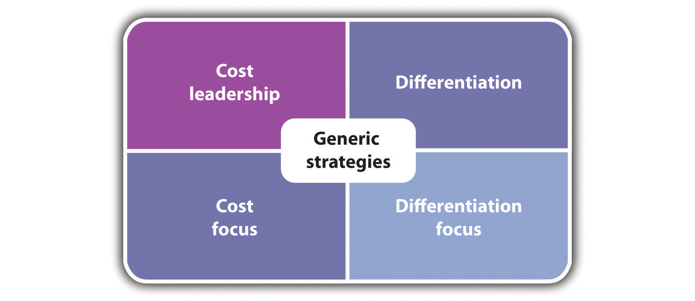

Without a strategy, the organization is like a ship without a rudder, going around in circles.
Joel Ross and Michael Kami
As mentioned in Chapter 2 "Your Business Idea: The Quest for Value", it is critically important for any business organization to be able to accurately understand and identify what constitutes customer value. To do this, one must have a clear idea of who your customers are or will be. However, simply identifying customer value is insufficient. An organization must be able to provide customer value within several important constraints. One of these constraints deals with the competition—what offerings are available and at what price. Also, what additional services might a company provide? A second critically important constraint is the availability of resources to the business organization. Resources consist of factors such as money, facilities, equipment, operational capability, and personnel.
Here is an example: a restaurant identified its prime customer base as being upscale clientele in the business section of a major city. The restaurant recognized that it has numerous competitors that are interested in providing the same clientele with an upscale dining experience. Our example restaurant might provide a five-course, five-star gourmet meal to its customers. It also provides superlative service. If a comparable restaurant failed to provide a comparable meal than the example restaurant, the example restaurant would have a competitive advantage. If the example restaurant offered these sumptuous meals for a relatively low price in comparison to its competitors, it would initially seem to have even more of an advantage. However, if the price charged is significantly less than the cost of providing the meal, the service in this situation could not be maintained. In fact, the restaurant inevitably would have to go out of business. Providing excellent customer service may be a necessary condition for business survival but, in and of itself, it is not a sufficient condition.
So how does one go about balancing the need to provide customer value within the resources available while always maintaining a watchful eye on competitors’ actions? We are going to argue that what is required for that firm is to have a strategyThe path by which a firm seeks to provide its customers with value, given the competitive environment and within the constraints of the resources available to the firm..
The word strategy is derived from the Greek word strategos, which roughly translates into the art of the general, namely a military leader. Generals are responsible for marshaling required resources and organizing the troops and the basic plan of attack. Much in the same way, executives as owners of businesses are expected to have a general idea of the desired outcomes, acquire resources, hire and train personnel, and generate plans to achieve those outcomes. In this sense, all businesses, large and small, have strategies, whether they are clearly written out in formal business plans or reside in the mind of the owner of the business.
There are many different formal definitions of strategy with respect to business. The following is a partial listing of some of the definitions given by key experts in the field:
A strategy is a pattern of objectives, purposes or goals and the major policies and plans for achieving these goals, stated in such a way as to define what business the company is in or is to be in and the kind of company it is or to be.Kenneth Arrow, The Concept of Corporate Strategy (Homewood, IL: Irwin, 1971), 28.
Kenneth Arrow
The determination of the long-run goals and objectives of an enterprise, and the adoption of courses of action and the allocation of resources necessary for carrying out these goals.Alfred Chandler, Strategy and Structure (Cambridge, MA: MIT Press, 1962), 13.
Alfred Chandler
What business strategy is all about, in a word, is competitive advantage.Kenichi Ohmae, The Mind of the Strategist (Harmondsworth, UK: Penguin Books, 1983), 6.
Kenichi Ohmae
We define the strategy of a business as follows: A firm’s strategy is the path by which it seeks to provide its customers with value, given the competitive environment and within the constraints of the resources available to the firm.
Whatever definition of strategy is used, it is often difficult to separate it from two other terms: strategic planning and strategic management. Both terms are often perceived as being in the domain of large corporations, not necessarily small to midsize businesses. This is somewhat understandable. The origin of strategic planning as a separate discipline occurred over fifty years ago. It was mainly concerned with assisting huge multidivisional or global businesses in coordinating their activities. In the intervening half-century, strategic planning has produced a vast quantity of literature. Mintzberg, Lampel, Ahlstrand, in a highly critical review of the field, identified ten separate schools associated with strategic planning.Henry Mintzberg, Joseph Lampel, and Bruce Ahlstrand, Strategic Safari: A Guided Tour through the Wilds of Strategic Management (New York: Free Press, 1998). With that number of different schools, it is clear that the discipline has not arrived at a common consensus. Strategic planning has been seen as a series of techniques and tools that would enable organizations to achieve their specified goals and objectives. Strategic management was seen as the organizational mechanisms by which you would implement the strategic plan. Some of the models and approaches associated with strategic planning and strategic management became quite complex and would prove to be fairly cumbersome to implement in all but the largest businesses. Further, strategic planning often became a bureaucratic exercise where people filled out forms, attended meetings, and went through the motions to produce a document known as the strategic plan. Sometimes what is missed in this discussion was a key element—strategic thinking. Strategic thinking is the creative analysis of the competitive landscape and a deep understanding of customer value. It should be the driver (see Figure 5.1 "Strategy Troika") of the entire process. This concept is often forgotten in large bureaucratic organizations.
Figure 5.1 Strategy Troika
Strategic thinkers often break commonly understood principles to reach their goals. This is most clearly seen among military leaders, such as Alexander the Great or Hannibal. Robert E. Lee often violated basic military principles, such as dividing his forces. General Douglas MacArthur shocked the North Koreans with his bold landings behind enemy lines at Inchon. This mental flexibility also exists in great business leaders.
Solomon and Friedman recounted a prime example of true strategic thinking.Paul Solman and Thomas Friedman, Life and Death on the Corporate Battlefield: How Companies Win, Lose, Survive (New York: Simon and Schuster, 1982), 24–27. Wilson Harrell took a small, closely held, cleaning spray company known as Formula 409 to the point of having national distribution. In 1967, the position that Formula 409 held was threatened by the possible entry of Procter & Gamble into the same spray cleaning market. Procter & Gamble was a huge consumer products producer, noted for its marketing savvy. Procter & Gamble began a program of extensive market research to promote its comparable product they called Cinch. Clearly, the larger firm had a much greater advantage. Harrell knew that Procter & Gamble would perform test market research. He decided to do the unexpected. Rather than directly confront this much larger competitor, he began a program where he reduced advertising expenditures in Denver and stopped promoting his Formula 409. The outcome was that Procter & Gamble had spectacular results, and the company was extremely excited with the potential for Cinch. Procter & Gamble immediately begin a national sales campaign. However, before the company could begin, Harrell introduced a promotion of his own. He took the Formula 409 sixteen-ounce bottle and attached it to a half-gallon size bottle. He then sold both at a significant discount. This quantity of spray cleaner would last the average consumer six to nine months. The market for Procter & Gamble’s Cinch was significantly reduced. Procter & Gamble was confused and confounded by its poor showing after the phenomenal showing in Denver. Confused and uncertain, the company chose to withdraw Cinch from the market. Wilson Harrell’s display of brilliant strategic thinking had bested them. He leveraged his small company’s creative thinking and flexibility against the tremendous resources of an international giant. Through superior strategic thinking, Harrell was able to best Procter & Gamble.
What Is Strategy?
(click to see video)Michael Porter of Harvard Business School provides a brief discussion of what strategy is.
Strategic Thinking and the Definition of Strategy
(click to see video)A Center for Management Organization and Effectiveness (CMOE) discussion of strategy; it leads to other similar videos.
Strategic Thinking—Develop Strategic Thinking Skills to Give Yourself a Competitive Edge
(click to see video)Follow-up CMOE video on strategic thinking.
Strategic Thinking and Management for Competitive Advantage
(click to see video)Two Wharton professors discuss how strategic thinking is critical to the acquisition of competitive advantage.
Mastering Strategic Thinking Workshop
(click to see video)A professor discusses the importance of strategic thinking for leadership.
From Strategic Thinking to Planning
(click to see video)A speaker illustrates that successful plans are tied to strategic thinking.
We have argued that all businesses have strategies, whether they are explicitly articulated or not. Perry stated that “small business leaders seem to recognize that the ability to formulate and implement an effective strategy has a major influence on the survival and success of small business.”Stephen C. Perry, “A Comparison of Failed and Non-Failed Small Businesses in the United States: Do Men and Women Use Different Planning and Decision Making Strategies?,” Journal of Developmental Entrepreneurship 7, no. 4 (2002): 415.
The extent to which a strategy should be articulated in a formal manner, such as part of a business plan, is highly dependent on the type of business. One might not expect a formally drafted strategy statement for a nonemployee business funded singularly by the owner. One researcher found that formal plans are rare in businesses with fewer than five employees.Stephen C. Perry, “An Exploratory Study of U.S. Business Failures and the Influence of Relevant Experience and Planning,” (PhD diss., George Washington University, 1998; dissertation available through UMI Dissertation Services, Ann Arbor, MI), 42. However, you should clearly have that expectation for any other type of small or midsize business.
Any business with employees should have an articulated strategy that can be conveyed to them so that they might better assist in implementing it. Curtis pointed out that in the absence of such communication, “employees make pragmatic short-term decisions that cumulatively form an ad-hoc strategy.”David A. Curtis, Strategic Planning for Smaller Businesses: Improving Corporate Performance and Personal Reward (Cambridge, MA: Lexington Books, 1983), 29. These ad hoc (realized) strategies may be at odds with the planned (intended) strategies to guide a firm.Henry Mintzberg, The Rise and Fall of Strategic Planning (New York: Free Press, 1994), 46. However, any business that seeks external funding from bankers, venture capitalists, or “angels” must be able to specify its strategy in a formal business plan.
Clearly specifying your strategy should be seen as an end in itself. Requiring a company to specify its strategy forces that company to think about its core issues, such as the following:
One commentator in a blog put it fairly well, “It never ceases to amaze me how many people will use GPS or Google maps for a trip somewhere but when it comes to starting a business they think that the can do it without any strategy, or without any guiding road-map.”Harry Tucci, comment posted to the following blog: Rieva Lesonsky, “A Small Business Plan Doubles Your Chances for Success, Says a New Survey, Small Business Trends, June 20, 2010, accessed October 10, 2011, smallbiztrends.com/2010/06/business-plan-success-twice-as-likely.html.
In 1980, Michael Porter a professor at Harvard Business School published a major work in the field of strategic analysis—Competitive Strategy.Michael Porter, Competitive Strategy: Techniques for Analyzing Industries and Competitors (New York: Free Press, 1980), 21. To simplify Porter’s thesis, while competition is beneficial to customers, it is not always beneficial to those who are competing. Competition may involve lowering prices, increasing research and development (R&D), and increasing advertising and other expenses and activities—all of which can lower profit margins. Porter suggested that firms should carefully examine the industry in which they are operating and apply what he calls the five forces model. These five forces are as follows: the power of suppliers, the power of buyers, the threat of substitution, the threat of new entrants, and rivalry within the industry. We do not need to cover these five forces in any great detail, other than to say that once the analysis has been conducted, a firm should look for ways to minimize the dysfunctional consequences of competition. Porter identified four generic strategies that firms may choose to implement to achieve that end. Actually, he initially identified three generic strategies, but one of them can be bifurcated. These four strategies are as follows (see Figure 5.2 "Generic Strategies"): cost leadership, differentiation, cost focus, and differentiation focus. These four generic strategies can be applied to small businesses. We will examine each strategy and then discuss what is required to successfully implement them.
Figure 5.2 Generic Strategies
A cost leadershipA firm is in the position of being the lowest cost producer in its competitive environment. strategy requires that a firm be in the position of being the lowest cost producer in its competitive environment. By being the lowest cost producer, a firm has several strategic options open to it. It can sell its product or service at a lower price than its competitors. If price is a major driver of customer value, then the firm with the lowest price should sell more. The low-cost producer also has the option of selling its products or services at prices that are comparable to its competitors. However, this would mean that the firm would have a much higher margin than its competitors.
Obviously, following a cost leadership strategy dictates that the business be good at curtailing costs. Perhaps the clearest example of a firm that employs a cost leadership strategy is Walmart. Walmart’s investment in customer relations and inventory control systems plus its huge size enables it to secure the “best” deals from suppliers and drastically reduce costs. It might appear that cost leadership strategies are most suitable for large firms that can exploit economies of scale. This is not necessarily true. Smaller firms can compete on the basis of cost leadership. They can position themselves in low-cost areas, and they can exploit their lower overhead costs. Family businesses can use family members as employees, or they can use a web presence to market and sell their goods and services. A small family-run luncheonette that purchases used equipment and offers a limited menu of standard breakfast and lunch items while not offering dinner might be good example of a small business that has opted for a cost leadership strategy.
A differentiationA firm provides products or services that meet customer value in some unique way. strategy involves providing products or services that meet customer value in some unique way. This uniqueness may be derived in several ways. A firm may try to build a particular brand image that differentiates itself from its competitors. Many clothing lines, such as Tommy Hilfiger, opt for this approach. Other firms will try to differentiate themselves on the basis of the services that they provide. Dominoes began to distinguish itself from other pizza firms by emphasizing the speed of its delivery. Differentiation also can be achieved by offering a unique design or features in the product or the service. Apple products are known for their user-friendly design features. A firm may wish to differentiate itself on the basis of the quality of its product or service. Kogi barbecue trucks operating in Los Angeles represent such an approach. They offer high-quality food from mobile food trucks.“Kogi Truck Schedule,” Kogi BBQ, accessed October 10, 2011, kogibbq.com. They further facilitate their differentiation by having their truck routes available on their website and on their Twitter account.
Adopting a differentiation strategy requires significantly different capabilities than those that were outlined for cost leadership. Firms that employ a differentiation strategy must have a complete understanding of what constitutes customer value. Further, they must be able to rapidly respond to changing customer needs. Often, a differentiation strategy involves offering these products and services at a premium price. A differentiation strategy may accept lower sales volumes because a firm is charging higher prices and obtaining higher profit margins. A danger in this approach is that customers may no longer place a premium value on the unique features or quality of the product or the service. This leaves the firm that offers a differentiation strategy open to competition from those that adopt a cost leadership strategy.
Porter identifies the third strategy—focus. He said that focus strategies can be segmented into a cost focusA firm seeks to provide value through low cost for a subset of the market given the competitive environment and within the constraints of the resources available to the firm. and a differentiation focusA firm concentrates on providing a unique product or service to a segment of the market..
In a focus strategy, a firm concentrates on one or more segments of the overall market. Focus can also be described as a niche strategy. Focus strategy entails deciding to some extent that we do not want to have everyone as a customer. There are several ways that a firm can adopt a focus perspective:
Firms adopting focus strategies look for distinct groups that may have been overlooked by their competitors. This group needs to be of sufficiently sustainable size to make it an economically defensible option. One might open a specialty restaurant in a particular geographic location—a small town. However, if the demand is not sufficiently large for this particular type of food, then the restaurant will probably fail. Companies that lack the resources to compete on either a national level or an industry-wide level may adopt focus strategies. Focus strategies enable firms to marshal their limited resources to best serve their customers.
As previously stated, focus strategies can be bifurcated into two directions—cost focus or differentiation focus. IKEA sells low-priced furniture to those customers who are willing to assemble the furniture. It cuts its costs by using a warehouse rather than showroom format and not providing home delivery. Michael Dell began his business out of his college dormitory. He took orders from fellow students and custom-built computers to their specifications. This was a cost focus strategy. By building to order, it almost totally eliminated the need for any incoming, work-in-process, or finished goods inventories.
A focus differentiation strategy concentrates on providing a unique product or service to a segment of the market. This strategy may be best represented by many specialty retail outlets. The Body Shop focuses on customers who want natural ingredients in their makeup. Max and Mina is a kosher specialty ice cream store in New York City. It provides a constantly rotating menu of more than 300 exotic flavors, such as Cajun, beer, lox, corn, and pizza. The store has been written up in the New York Times and People magazine. Given its odd flavors, Max and Mina’s was voted the number one ice cream parlor in America in 2004.Max and Mina’s Ice Cream, accessed October 10, 2011, www.maxandminasicecream.com.
The selection of a generic strategy by a firm should not be seen as something to be done on a whim. Once a strategy is selected, all aspects of the business must be tied to implementing that strategy. As Porter stated, “Effectively implementing any of these generic strategies usually requires total commitment and supporting organizational arrangements.”Michael Porter, Competitive Strategy: Techniques for Analyzing Industries and Competitors (New York: Free Press, 1980), 21. The successful implementation of any generic strategy requires that a firm possess particular skills and resources. Further, it must impose particular requirements on its organization (see Table 5.1 "Summary of Generic Strategies").
Even successful generic strategies must recognize that market and economic conditions change along with the needs of consumers. Henry Ford used a cost leadership strategy and was wildly successful until General Motors began to provide different types of automobiles to different customer segments. Likewise, those who follow a differentiation strategy must be cautious that customers may forgo “extras” in a downturn economy in favor of lower costs. This requires businesses to be vigilant, particularly with respect to customer value.
Table 5.1 Summary of Generic Strategies
| Generic Strategy | Required Activities | Issues |
|---|---|---|
| Cost leadership |
|
|
| Differentiation |
|
|
| Focus—low cost |
|
|
| Focus—differentiation |
|
|
Porter’s Strategies—Generic Strategies
(click to see video)Examples of generic strategies.
The Five Competitive Forces That Shape Strategy
(click to see video)A long interview with Michael Porter discussing the five forces model.